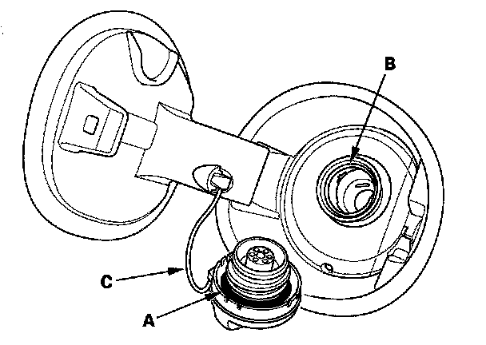
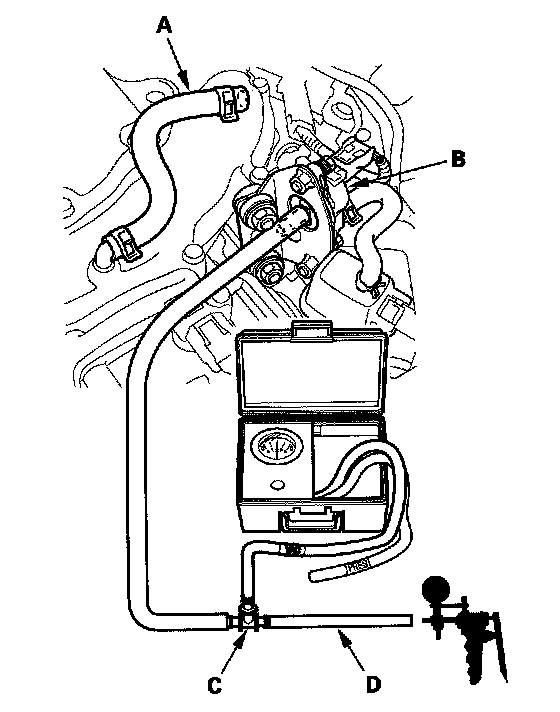

Fuel Cap Warning Message System Troubleshooting
Fuel Cap Warning Message System TroubleshootingSpecial Tools Required
- Vacuum pump/gauge, 0-30 in.Hg, Snap-on YA4000A or equivalent, commercially available
- Vacuum/pressure gauge, 0-4 in.Hg 07JAZ-001000B
When the fuel fill cap warning message does not go off after fuel fill cap tightened, or the message turned on frequently, do this troubleshooting procedure.
1. Check the fuel fill cap (the cap must say "TIGHTEN TO CLICK"). It should turn 1/4 after it's tight, then it clicks.
Is the correct fuel fill cap installed and properly tightened?
YES - Go to step 2.
NO - Replace or tighten the cap, then go to step 13.

2. Check the fuel fill cap seal (A) and the fuel fill pipe mating surface (B). Verify that the fuel fill cap tether cord (C) is not caught under the cap.
Is the fuel fill cap seal missing or damaged, is the fuel fill pipe damaged, or is the tether cord caught under the cap?
YES - Replace the fuel fill cap or the fuel fill pipe, then go to step 13.
NO - Go to step 3.
3. Reinstall and tighten the fuel fill cap.
4. Clear the DTC with the HDS.
5. Start the engine. Hold the engine speed at 3,000 rpm without load (in Park or neutral) until the radiator fan comes on, then let it idle for 1 minute.
6. Test-drive at 45 mph (72 km/h) 1 minute or more.
Does the fuel cap message come on?
YES - Go to step 7.
NO - Intermittent failure, the system is OK at this time.
7. Turn the ignition switch OFF.

8. Disconnect the vacuum hose (A) from the EVAP canister purge valve (B) in the engine compartment. Connect the T-fitting (C) from the vacuum gauge and the vacuum pump/gauge, 0-30 in.Hg, to the vacuum hose (D) as shown.
9. Apply vacuum to the hose about 2 kPa (0.6 in.Hg, 15 mmHg).
NOTE: Be careful not to exceed the vacuum. If you do, the FTP sensor can be damaged.
10. Turn the ignition switch ON (II).
11. Select the EVAP PCS ON in the INSPECTION MENU with the HDS.
Release the vacuum immediately?
YES - Check for vacuum hose blockage between the EVAP canister purge valve and the EVAP canister, then go to step 12.
NO - Replace the EVAP canister purge valve, then go to step 12.
12. Install the parts in the reverse order of removal.
13. Turn the ignition switch ON (II).
14. Reset the PCM with the HDS.
15. Do the PCM idle learn procedure.
16. Start the engine. Hold the engine speed at 3,000 rpm without load (in Park or neutral) until the radiator fan comes on, then let it idle for 1 minute.
17. Test-drive at 45 mph (72 km/h) for 1 minute or more.
Does the fuel fill cap message come on?
YES - Go to step 1 and recheck.
NO - Troubleshooting is complete.